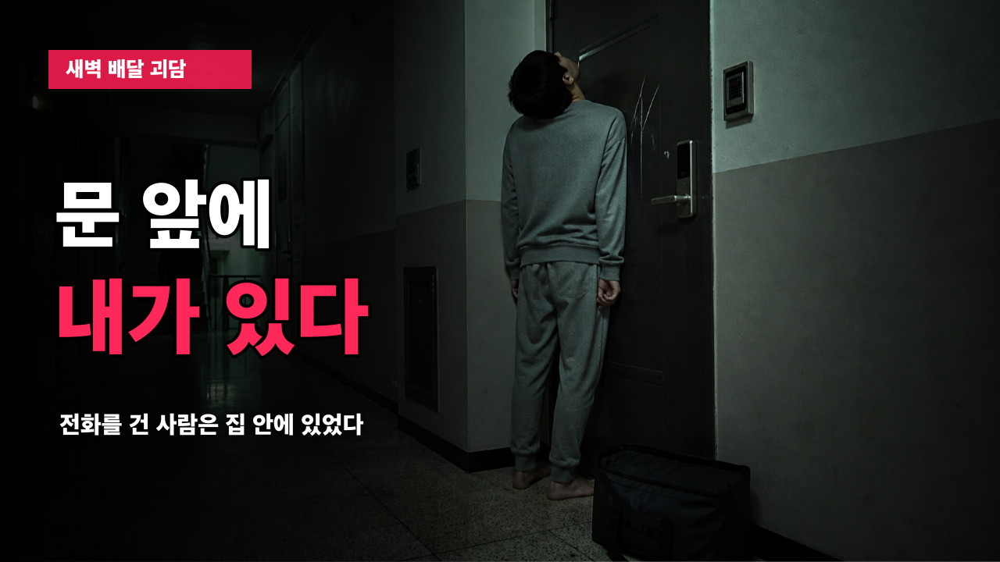
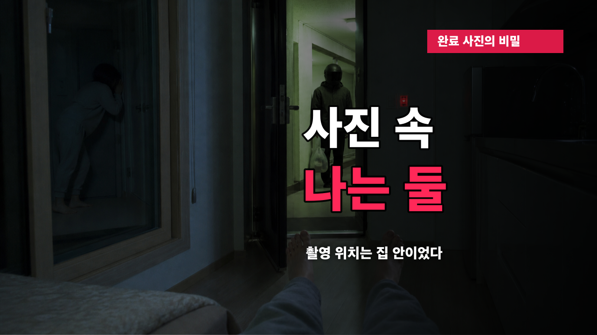

YouTube Publish Kit
문 앞에 내가 있다
제목, 설명, 태그, 고정 댓글, SNS 문구를 한 화면에서 복사하고 완성 영상을 바로 열 수 있습니다.
Main Title
메인 제목
새벽 2시 44분, 문 앞에 나와 똑같은 사람이 서 있었다 | 공포괴담
Alternative Titles
추천 제목 5가지
배달기사가 말했다 “고객님이 문 앞에 서 계세요” 그런데 나는 집 안에 있었다
완료 사진은 집 안에서 찍혔다…사진 속에는 내가 둘이었다
주문하지 않은 배달이 도착했다 “빈 그릇 하나, 직접 전달”
문에 등을 붙인 채 고개만 꺾어 집 안을 보던 사람 | 무서운 이야기
새집 주소를 아무도 모르는데 배달원은 이미 문 앞에 도착했다
Description
설명란
새벽 두 시 사십사 분, 배달기사가 전화했습니다. “고객님, 문 앞에 계시면서 왜 전화를 안 받으세요?” 하지만 나는 침대에 누워 있었습니다. 문 앞에는 회색 운동복을 입고 맨발로 선 사람이 있었습니다. 나와 똑같은 옷차림이었습니다. 주문하지 않은 배달앱에는 ‘빈 그릇 하나. 직접 전달.’이라는 문장이 떠 있었고, 완료 사진은 복도가 아니라 집 안에서 찍혀 있었습니다. 사진 속에는 내가 둘이었습니다. 문 앞의 또 다른 나, 실내에서 열린 도어록, 화장실 앞에 겹쳐 선 네 개의 발끝, 그리고 이사한 새집까지 따라온 마지막 배달. 일상적인 배달 한 통에서 시작해 끝까지 조여 오는 창작 공포괴담입니다. ⏱ 타임스탬프 00:00 배달기사가 건 전화 00:18 문 앞의 회색 운동복 00:44 목소리를 따라 고개를 드는 사람 01:15 빈 그릇 하나 · 직접 전달 01:47 문에 등을 붙인 채 집 안을 보다 02:30 내가 보내지 않은 채팅 02:52 실내 수동 열림 03:19 화장실 앞 네 개의 발끝 03:55 집 안에서 찍힌 완료 사진 04:19 사진 속 두 명의 나 04:40 젖은 빈 그릇 05:13 새집으로 따라온 배달 06:03 이미 문 앞에 도착했습니다 🎧 영상 구성 - 얼굴 노출 없는 다크 시네마틱 모션 영상 - ElevenLabs Esther 보이스 내레이션 - 승인 BGM cand-03 - 한국어 SRT/VTT 자막 제공 이 영상은 창작 공포 이야기입니다. 등장인물, 장소와 사건은 허구이며 실제 인물이나 사건과 관계가 없습니다. 여러분이라면 어느 순간 문을 열었을까요? 가장 소름 돋았던 장면을 댓글로 남겨 주세요. #공포이야기 #무서운이야기 #공포괴담
Tags
검색 태그
Pinned Comment
고정 댓글
여러분이라면 어느 순간 가장 먼저 도망쳤을까요? 1. 문 앞에 나와 똑같은 사람이 서 있었을 때 2. 도어록에 ‘실내 수동 열림’이 떴을 때 3. 완료 사진이 집 안에서 찍힌 것을 확인했을 때 4. 새집 문 앞에서 내 목소리가 들렸을 때 번호와 이유를 함께 남겨 주세요. 가장 많은 선택을 받은 장면을 다음 공포 이야기와 연결하겠습니다.
Social Promotion
SNS 홍보 문구
오늘 밤, 배달기사가 전화했습니다. “고객님, 문 앞에 계시면서 왜 전화를 안 받으세요?” 그런데 나는 집 안 침대에 누워 있었습니다. 문 앞에는 나와 똑같은 옷을 입은 사람이 서 있었습니다. 오늘 밤 10시 공개. #공포이야기 #무서운이야기 #괴담
배달기사가 말했다. “고객님이 문 앞에 서 계세요.” 하지만 나는 집 안에 있었다. 완료 사진은 집 안에서 찍혔고, 사진 속에는 내가 둘이었다. 전체 이야기 → [유튜브 링크] #공포이야기 #괴담
새벽 두 시 사십사 분, 배달기사가 문 앞에 내가 서 있다고 말했습니다. 나는 집 안에 있었습니다. 문 앞의 사람은 내가 입은 것과 똑같은 회색 운동복을 입고 있었습니다. 완료 사진은 집 안에서 찍혔고, 사진 속에는 내가 둘이었습니다. 일상적인 배달 한 통에서 시작하는 6분 창작 공포괴담을 공개했습니다. 여러분이라면 어느 순간 가장 먼저 도망쳤을까요? 전체 영상 → [유튜브 링크] #공포이야기 #무서운이야기 #공포괴담 #괴담
Thumbnails
썸네일 2안

A안 · 문 앞의 또 다른 나

B안 · 완료 사진의 반전
Test & Compare
제목·썸네일 테스트 조합
조합 1 · 기본
A안
새벽 2시 44분, 문 앞에 나와 똑같은 사람이 서 있었다 | 공포괴담
조합 2 · 대화형
A안
배달기사가 말했다 “고객님이 문 앞에 서 계세요” 그런데 나는 집 안에 있었다
조합 3 · 반전형
B안
완료 사진은 집 안에서 찍혔다…사진 속에는 내가 둘이었다
Publishing Time
게시 최적화 시간
최종 권장: 2026년 8월 28일 금요일 22:00 KST · 일반 예약 공개
1순위금요일 22:00
심야 공포 분위기와 주말 진입 시청 수요를 함께 노립니다.
대안토요일 22:00
YouTube Studio의 ‘시청자가 YouTube를 이용하는 시간’ 데이터가 있다면 그 시간보다 30~60분 먼저 공개합니다.
| 공개 전 | 자막본 비공개 업로드, 1080p 처리·SRT·챕터·엔드스크린·저작권 검사 완료 |
|---|---|
| 19:00 | 커뮤니티와 SNS에 3시간 전 예고 게시 |
| 22:00 | 일반 예약 공개, 제목·썸네일 테스트 시작 |
| 22:05 | 고정 댓글 등록, X·Threads·Instagram에 링크 게시 |
| 다음 날 12:00 | 가장 무서웠던 장면 번호를 묻는 커뮤니티 투표 |